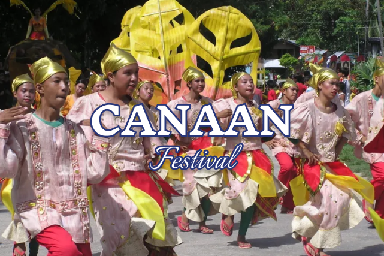

Meaning of "Dilaab":
The word "Dilaab" comes from the Cebuano term meaning "to ignite" or "to set on fire." It symbolizes the burning passion, faith, and unity of the people of Siquijor.
Purpose and Significance:
The festival is celebrated to honor the island's patron saint, St. Francis of Assisi, and to showcase the rich cultural heritage, traditions, and spiritual devotion of the Siquijodnons. It also serves as a way to promote tourism, highlighting the island's natural beauty, mystical charm, and warm hospitality.
When is it Celebrated?
The Dilaab Festival is held annually in October, coinciding with the feast day of St. Francis of Assisi on October 4. The festivities usually last for several days, featuring a mix of religious, cultural, and recreational activities.
Meaning of "Bugwas":
The term "Bugwas" refers to the splashing of water or the spray of liquid, symbolizing the refreshing and life-giving properties of water, which is essential for agriculture and daily life. It also represents the cleansing and renewal of the community's spirit.
Purpose and Significance:
The Bugwas Festival is celebrated to honor San Juan Bautista (St. John the Baptist), the patron saint of San Juan, Siquijor. St. John the Baptist is often associated with water, as he baptized people in the Jordan River. The festival also highlights the town's agricultural heritage, particularly its reliance on farming and fishing, and serves as a thanksgiving celebration for a bountiful harvest.
When is it Celebrated?
The Bugwas Festival is held annually in June, coinciding with the feast day of St. John the Baptist on June 24. The festivities usually last for several days, featuring a mix of religious, cultural, and recreational activities.
Meaning of "Cana-an":
The term "Cana-an" is derived from the Cebuano word meaning "promised land" or "land of abundance." It symbolizes the town's gratitude for the blessings of a bountiful harvest, natural resources, and spiritual prosperity.
Purpose and Significance:
The Cana-an Festival is celebrated to honor the town's patron saint, San Isidro Labrador (St. Isidore the Farmer), who is the patron saint of farmers and laborers. The festival is a thanksgiving celebration for a successful harvest and a prayer for continued abundance. It also serves as a way to showcase Lazi's rich cultural heritage, traditions, and the unity of its people.
When is it Celebrated?
The Cana-an Festival is held annually in May, coinciding with the feast day of San Isidro Labrador on May 15. The festivities usually last for several days, featuring a mix of religious, cultural, and recreational activities.
Meaning of "Saging":
The term "Saging" is the Filipino word for banana, a staple crop in Larena and a vital part of the local economy and diet. The festival celebrates the banana's role in sustaining the community and its contribution to the town's livelihood.
Purpose and Significance:
The Saging Festival is a thanksgiving celebration for the bountiful harvest of bananas and other agricultural products. It also aims to promote the banana industry in Larena and raise awareness about the crop's economic and nutritional value. The festival showcases the town's agricultural heritage, creativity, and community spirit, while also honoring the hard work of local farmers.
When is it Celebrated?
The Saging Festival is held annually in April, coinciding with the town's founding anniversary or other significant local events. The festivities usually last for several days, featuring a mix of cultural, agricultural, and recreational activities.
Meaning of "Solili":
The term "Solili" is derived from the Cebuano word meaning "to search" or "to seek." It symbolizes the town's quest for spiritual enlightenment, cultural identity, and community unity.
Purpose and Significance:
The Solili Festival is celebrated to honor the town's patron saint, Our Lady of Divine Providence (Nuestra Señora de la Divina Providencia), who is venerated for her guidance and protection. The festival is a thanksgiving celebration for the blessings received and a prayer for continued guidance and prosperity. It also serves as a way to showcase Maria's rich cultural heritage, traditions, and the unity of its people.
When is it Celebrated?
The Solili Festival is held annually in November, coinciding with the feast day of Our Lady of Divine Providence on November 19. The festivities usually last for several days, featuring a mix of religious, cultural, and recreational activities.